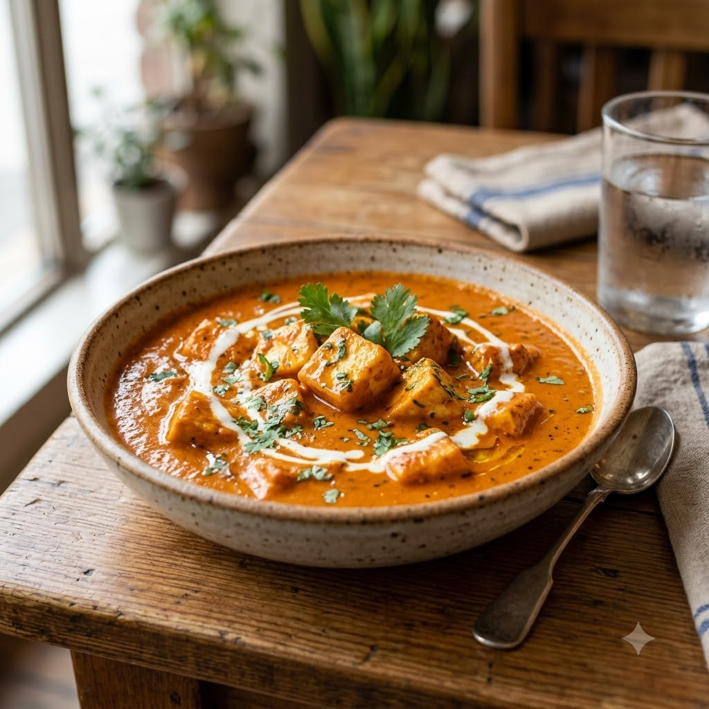

Paneer Butter Masala

Paneer Butter Masala
Chef Magic – Sauté Auto 22 min — Serves 4
Ingredients
- 200g paneer, cubed
- 2 tomatoes, chopped
- 1 onion, chopped
- 10 cashews
- 1 tbsp butter
- 1 tsp ginger-garlic paste (adrak-lehsun paste)
- 1 tsp garam masala
- 1/2 tsp red chilli powder (lal mirch powder)
- 2 tbsp cream
- Salt to taste
Method
1Add butter, onion, tomatoes, cashews and ginger-garlic paste to the jar; select Sauté (Speed 2–4, ~130–160°C) until soft.
2Select Whisk/Blend (Speed 8–10) briefly to purée into a smooth gravy base.
3Select Sauté (Speed 1–2, ~100–110°C) again, stir in garam masala, chilli powder and salt, and simmer 5 minutes.
4Add paneer cubes and cream; sauté gently 4 minutes until warmed through.